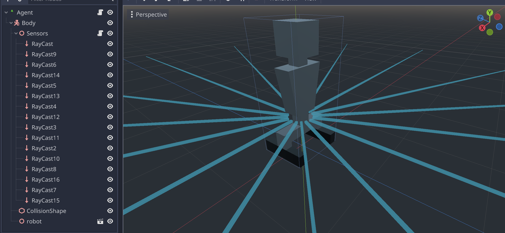

Creating Agent
Now we are going to create an Agent.
In Godot Gym API Agent (RLAgent node) is assumed stay in the same position,
while its children can move. This done to enable the agent control different node types
(e.g., KinematicBody or VehcileBody).
Open
Agent.tscnfile.Change
Agentnode type fromSpatialtoRLAgent.Add child node called Sensors of
Spatialtype as followRLAgent/Body/Sensors.Put 16
RayCastnodes as shown on image below to avoid handling collision layer system since rays intersect the robot body itself:RayCastnodes propertycast_toshould be set asx = 0,y = 0,z = 5.Attach the following script to
Sensornode:extends Spatial # The maximum distance of the agent sensors. const max_sensor_distance = 5 # Target node var target func get_data() -> Dictionary: var distances_to_obstacle = [] var distances_to_target = [] for ray in get_children(): var distance: float = max_sensor_distance var distance_to_target: float = max_sensor_distance if ray.is_colliding(): distance = ray.global_translation.distance_to(ray.get_collision_point()) if ray.get_collider() == target: distance_to_target = distance distances_to_obstacle.append(distance) distances_to_target.append(distance_to_target) var data = { "distances_to_obstacle": distances_to_obstacle, "distances_to_target": distances_to_target } return data
This script gathers data into dictionary with two keys:
distances_to_obstacleanddistances_to_target. Recall, this is what we wanted to use as agent’s observation in previous section.Open
Agentnode script.Change script as follows:
{kind=link}
extends RLAgent
export var target_node_path: NodePath
# How fast the agent moves in meters per second.
var speed = 5
# Current velocity of the agent.
var velocity: Vector3 = Vector3.ZERO
var current_action: int = -1
onready var body = $Body
onready var sensors = $Sensors
func get_data(_observation_request, storage) -> void:
var data = sensors.get_data()
for distance in data["distances_to_obstacle"]:
storage.add_distances_to_obstacle(float(distance))
for distance in data["distances_to_target"]:
storage.add_distances_to_target(float(distance))
func set_action(action):
current_action = action
func reset(arguments=null):
velocity = Vector3.ZERO
current_action = -1
body.set_global_translation(Vector3(0, 0, 2))
func move_body():
var direction = Vector3.ZERO
if current_action == 0: # MOVE_RIGHT
direction.x -= 1
elif current_action == 1: # MOVE_LEFT
direction.x += 1
elif current_action == 2: # MOVE_UP
direction.z += 1
elif current_action == 3: # MOVE_DOWN
direction.z -= 1
if direction != Vector3.ZERO:
direction = direction.normalized()
velocity.x = direction.x * speed
velocity.z = direction.z * speed
velocity = body.move_and_slide(velocity, Vector3.UP)
func _ready():
body.set_axis_lock(PhysicsServer.BODY_AXIS_LINEAR_Y, true)
sensors.target = get_node(target_node_path)
func _physics_process(delta):
move_body()
extends Spatial
# How fast the agent moves in meters per second.
var speed = 5
# Current velocity of the agent.
var velocity: Vector3 = Vector3.ZERO
onready var body = $Body
func move_body():
var direction = Vector3.ZERO
if Input.is_action_pressed("ui_right"):
direction.x -= 1
elif Input.is_action_pressed("ui_left"):
direction.x += 1
elif Input.is_action_pressed("ui_up"):
direction.z += 1
elif Input.is_action_pressed("ui_down"):
direction.z -= 1
if direction != Vector3.ZERO:
direction = direction.normalized()
velocity.x = direction.x * speed
velocity.z = direction.z * speed
velocity = body.move_and_slide(velocity, Vector3.UP)
func _ready():
body.set_axis_lock(PhysicsServer.BODY_AXIS_LINEAR_Y, true)
func _physics_process(delta):
move_body()
Let’s examine what we changed.
We changed parent class from
SpatialtoRLAgent.We introduced new variable to set target the agent should find.
export var target_node_path: NodePath
We introduced a variable to store current action.
var current_action: int = -1
We introduced a variable to quickly access our sensors.
onready var sensors = $Sensors
We updated
_readymethod to set sensors target.func _ready(): body.set_axis_lock(PhysicsServer.BODY_AXIS_LINEAR_Y, true) sensors.target = get_node(target_node_path)
func _ready(): body.set_axis_lock(PhysicsServer.BODY_AXIS_LINEAR_Y, true)
We updated
move_bodymethod to manupalateBodywith actions instead of keyboard.func move_body(): var direction = Vector3.ZERO if current_action == 0: # MOVE_RIGHT direction.x -= 1 elif current_action == 1: # MOVE_LEFT direction.x += 1 elif current_action == 2: # MOVE_UP direction.z += 1 elif current_action == 3: # MOVE_DOWN direction.z -= 1 if direction != Vector3.ZERO: direction = direction.normalized() velocity.x = direction.x * speed velocity.z = direction.z * speed velocity = body.move_and_slide(velocity, Vector3.UP)
func move_body(): var direction = Vector3.ZERO if Input.is_action_pressed("ui_right"): direction.x -= 1 elif Input.is_action_pressed("ui_left"): direction.x += 1 elif Input.is_action_pressed("ui_up"): direction.z += 1 elif Input.is_action_pressed("ui_down"): direction.z -= 1 if direction != Vector3.ZERO: direction = direction.normalized() velocity.x = direction.x * speed velocity.z = direction.z * speed velocity = body.move_and_slide(velocity, Vector3.UP)
7. RLAgent class have optional method reset to reset world that does nothing be default.
We override the method to reset current action and locate out agent in initial position.
func reset(arguments=null): velocity = Vector3.ZERO current_action = -1 body.set_global_translation(Vector3(0, 0, 2))
8. By default, RLAgent.get_data method raise an error, since no data to return is specified.
Here, we override it to set storage.distances_to_obstacle and storage.distances_to_target fields with corresponding values from added sensors.
storage is a agent_data in protobuf message we have defined earlier.
In case you define various possible observations but you want to experiment with particular ones,
you can define logic of the storage filling with help of observation keys in observation_request.
func get_data(_observation_request, storage) -> void: var data = sensors.get_data() for distance in data["distances_to_obstacle"]: storage.add_distances_to_obstacle(float(distance)) for distance in data["distances_to_target"]: storage.add_distances_to_target(float(distance))
9. By default, RLAgent.get_data method raise an error, since no action to perform is specified.
Here we override it to assign action value to the introduced variable current_action. You can have more complex actions and corresponding logic in the method.
func set_action(action): current_action = action
Thats’s it for Agent! Let’s summarize:
RLAgentmust haveget_dataandset_actionmethods implemented.RLAgentcan haveresetmethod implemented.